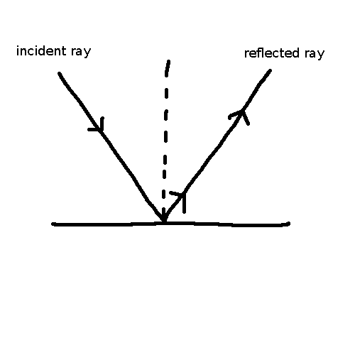
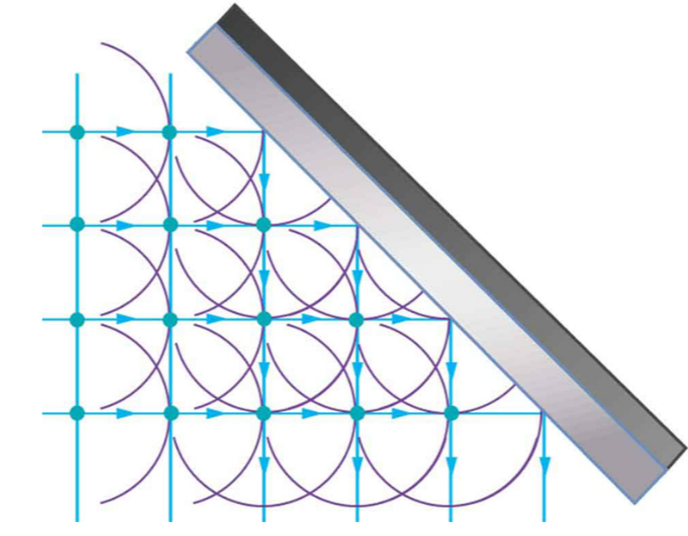
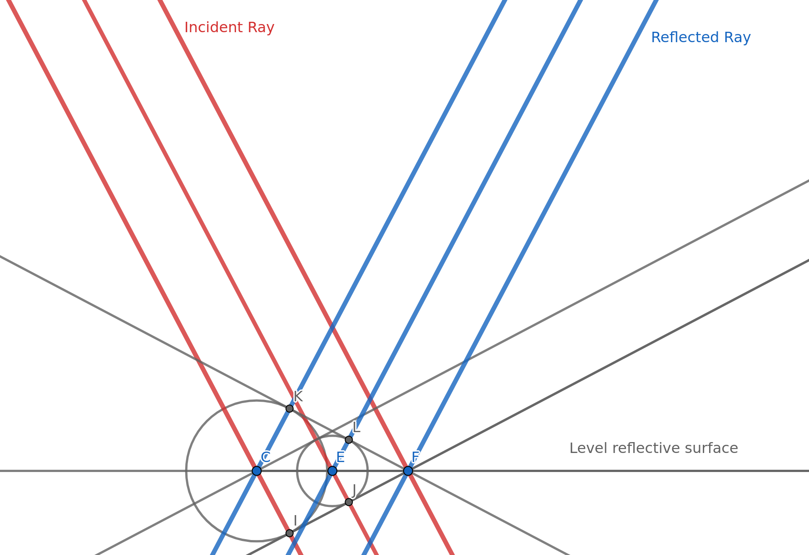

Last modified: 2023-07-10
Example 2: When a light wave hits a reflective level surface, then the light is the reflected off of the surface.

Explanation 2: When a wavefront hits a surface, then you can imagine another wavelet produced on each point of impact. Again, you can take the locus of all of these points to get the reflected wavefront.

Key point: Using Huygen’s principle, we are able to predict how waves interact with objects, whether that be through refraction, reflection, or diffraction. For these interactions, we can assume that a secondary wavelet is formed at the point of ‘impact’. Using this, we are able to predict how a wave may behave. With refraction, the change in the speed of the wave allows us to calculate which way a wave will bend when entering a new medium. With reflection, we can predict how it reflects (abides by the law of reflection).

(Wavefronts substituted for rays of light in order bring focus to the reflection)
found on spicata.99000000.xyz. no rights reserved.
published by 99 000 000.xyz.